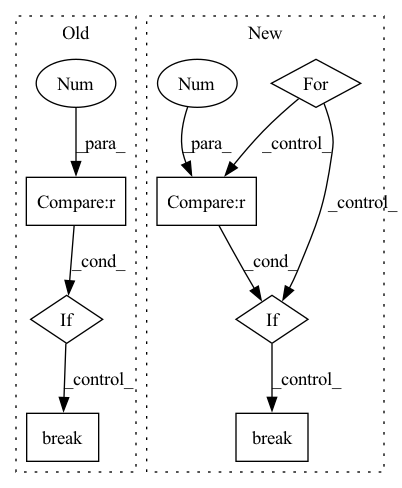

Pattern ID :19325
Before Change
if "js_place_length" in result:
results.append(result)
if num_sample < 0 :
if len(results) == abs(num_sample):
break
if not results:
logger.error("No solution is found")
return
After Change
)
auc_pred = auc_pred.cpu().numpy()
for threshold in [0.6, 0.4, 0.2, 0]:
keep = success_pred > threshold
if keep.sum() > 0 :
break
success_pred = success_pred[keep]
length_pred = length_pred[keep]
auc_pred = auc_pred[keep]In pattern: SUPERPATTERN
Frequency: 3
Non-data size: 7
Instances Fragment ID: 63072242
Project Name: wkentaro/safepicking
Commit Name: ff8d814b270cd083c0295ae7f30192ca46d865f5
Time: 2021-05-28
Author: www.kentaro.wada@gmail.com
File Name: examples/reorient/learned.py
M Class Name: AnonimousClass
N Class Name: AnonimousClass
M Method Name: plan_and_execute_reorient(5)
N Method Name: plan_and_execute_reorient(5)
M Parent Class:
N Parent Class:
M File Name: examples/reorient/learned.py
N File Name: examples/reorient/learned.py
M Start Line: 30
M End Line: 142
N Start Line: 76
N End Line: 144
Before Change
if "js_place_length" in result:
results.append(result)
if num_sample < 0 :
if len(results) == abs(num_sample):
break
if not results:
logger.error("No solution is found")
return
After Change
)
auc_pred = auc_pred.cpu().numpy()
for threshold in [0.6, 0.4, 0.2, 0]:
keep = success_pred > threshold
if keep.sum() > 0 :
break
success_pred = success_pred[keep]
length_pred = length_pred[keep]
auc_pred = auc_pred[keep] Fragment ID: 63072243
Project Name: wkentaro/reorientbot
Commit Name: ff8d814b270cd083c0295ae7f30192ca46d865f5
Time: 2021-05-28
Author: www.kentaro.wada@gmail.com
File Name: examples/reorient/learned.py
M Class Name: AnonimousClass
N Class Name: AnonimousClass
M Method Name: plan_and_execute_reorient(5)
N Method Name: plan_and_execute_reorient(5)
M Parent Class:
N Parent Class:
M File Name: examples/reorient/learned.py
N File Name: examples/reorient/learned.py
M Start Line: 30
M End Line: 142
N Start Line: 76
N End Line: 144
Before Change
layer_dict = {0: 2, 1: 5, 2: 8, 3: 9, 4: 10, 5: 11, 6: 12, 7: 13, 8: 14, 9: 17, 10: 20, 11: None}
for layer_num_orig in range(12):
// Load the trained generator.
self.restore_model(self.test_iters)
// Set data loader.
if self.dataset == "CelebA":
data_loader = self.celeba_loader
elif self.dataset == "RaFD":
data_loader = self.rafd_loader
// Initialize Metrics
l1_error = 0.0
l2_error = 0.0
min_dist = 0.0
l0_error = 0.0
perceptual_error = 0.0
n_samples = 0
// 11 layers + output
// layer_num_orig = 11
print("Layer", layer_num_orig)
for i, (x_real, c_org) in enumerate(data_loader):
// Black image
black = np.zeros((1,3,256,256))
black = torch.FloatTensor(black).to(self.device)
// Prepare input images and target domain labels.
x_real = x_real.to(self.device)
c_trg_list = self.create_labels(c_org, self.c_dim, self.dataset, self.selected_attrs)
layer_num = layer_dict[layer_num_orig]
pgd_attack = attacks.LinfPGDAttack(model=self.G, device=self.device, feat=layer_num)
// Translate images.
x_fake_list = [x_real]
// if i == 0:
// x_adv, perturb = pgd_attack.perturb(x_real, x_real, c_trg_list[0])
for c_trg in c_trg_list:
// Attack
x_adv, perturb = pgd_attack.perturb(x_real, black, c_trg)
// x_adv = x_real + perturb
// x_adv = self.blur_tensor(x_adv)
// Metrics
with torch.no_grad():
// gen, preproc_x = self.G(x_adv, c_trg)
gen, gen_feats = self.G(x_adv, c_trg)
// Add to lists
// x_fake_list.append(preproc_x)
x_fake_list.append(x_adv)
x_fake_list.append(gen)
// No Attack
// gen_noattack, _ = self.G(x_real, c_trg)
gen_noattack, gen_noattack_feats = self.G(x_real, c_trg)
l1_error += F.l1_loss(gen, gen_noattack)
l2_error += F.mse_loss(gen, gen_noattack)
l0_error += (gen - gen_noattack).norm(0)
min_dist += (gen - gen_noattack).norm(float("-inf"))
n_samples += 1
// Save the translated images.
x_concat = torch.cat(x_fake_list, dim=3)
// result_path = os.path.join(self.result_dir, "{}-images.jpg".format(i+1))
result_path = os.path.join(self.result_dir, "{}-{}-images.jpg".format(layer_num_orig, i+1))
save_image(self.denorm(x_concat.data.cpu()), result_path, nrow=1, padding=0)
// print("Saved real and fake images into {}...".format(result_path))
if i == 3 :
break
// if i == 199:
// break
// Print metricsAfter Change
// print("Saved real and fake images into {}...".format(result_path))
// if i == 3:
// break
if i == 199 :
break
// Print metrics
print("{} images. L1 error: {}. L2 error: {}. L0 error: {}. L_-inf error: {}. Perceptual error: {}.".format(n_samples,
l1_error / n_samples, l2_error / n_samples, l0_error / n_samples, min_dist / n_samples, perceptual_error / n_samples)) Fragment ID: 63072246
Project Name: natanielruiz/disrupting-deepfakes
Commit Name: 4161e50d0efc7a176c9010f77b9c9e27746209d1
Time: 2019-12-26
Author: nruiz@Nataniels-MacBook-Pro.local
File Name: stargan/solver.py
M Class Name: Solver
N Class Name: Solver
M Method Name: test_attack(1)
N Method Name: test_attack(1)
M Parent Class: object
N Parent Class: object
M File Name: stargan/solver.py
N File Name: stargan/solver.py
M Start Line: 664
M End Line: 747
N Start Line: 576
N End Line: 659